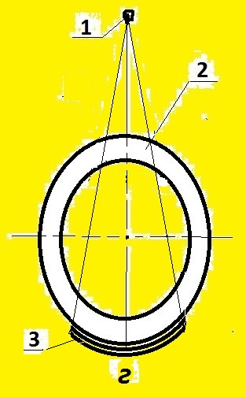
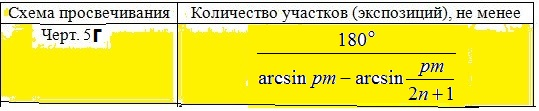

4.3. При контроле через две стенки схема черт.5г
- для просвечивания изделий диаметром более 50 мм.
4.5. При контроле сварных соединений по схеме
черт. 5г направление излучения следует выбирать
таким, чтобы изображения противолежащих участков
сварного шва на снимке не накладывались друг на
друга. При этом угол между направлением излучения
и плоскостью сварного шва должен быть минимальным
и в любом случае не превышать 45°.
ПРИЛОЖЕНИЕ 4.1. Расстояние f от источника излуче-
ния до обращенной к источнику поверхности контро-
лируемого сварного соединения не должно быть менее
значений, определяемых по формулe
f >= 0,5[1,5С(1-m)-1]D,
где С=2Ф/К при Ф/К >= 2 и С=4 при при Ф/К менее 2;
s - радиационная толщина, мм;
D - наружный диаметр контролируемого сварного сое-
динения, мм;
m - отношение внутреннего и наружного диаметров
контролируемого сварного соединения;
Ф - максимальный размер фокусного пятна источника
излучения, мм;
K - требуемая чувствительность контроля, мм.
Примечание. Если для схемы черт. 5г величина f - от-
рицательная, то f может быть принято равным нулю
(т.е. источник излучения может помещаться непосред-
ственно на противоположной контролируемому участку
стенке изделия).
3. Количество участков (экспозиций) при контроле по
схеме черт. 5г не должно быть менее значений, опре-
деляемых по формуле, приведенной в таблице:

Выберите класс чувствительности по ГОСТ 7512-82
класс чувствител. класс : Выбрать 1, 2 или 3
наружный диаметр D, мм : Выбрать D больше d
внутренний диаметр d, мм : Выбрать d меньше D
усиление шва h, мм : Выбрать h не менее 0 и не более 5 мм
фокусное пятно Ф, мм : Выбрать Ф более 0 и не более 5 мм